大型语言模型与人工智能
ChatGPT及其他
忻斌健
智能系统前沿开发
2023年03月12日

Table of Contents
概述
技术进步
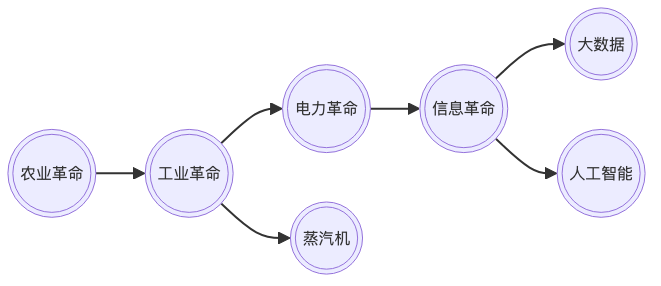
科学观念的更新
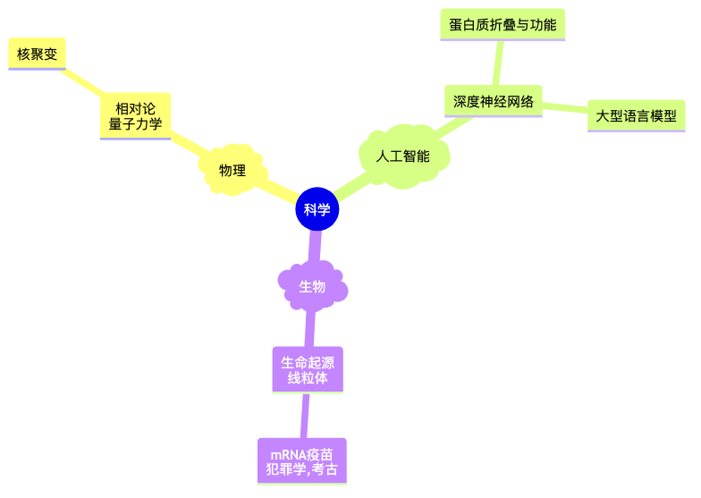
什么是 ChatGPT？
Chat Generative Pretrained Transformer
- 本质：智能转化为计算
- 计算的基本对象：内嵌空间 （ embedding ）
- 机器学习方法
- 特点
- 大规模
- 单一的方法（深度学习 Transformer 架构）
- 多语言模式
- 强人工智能，AGI（？）
- 开源开放
- 知道如何工程实现，根本原因不清楚
- 普遍适用其他复杂现象：图像，控制，可迁移
- 机缘巧合
Ilya Sutskever NIPS 2015
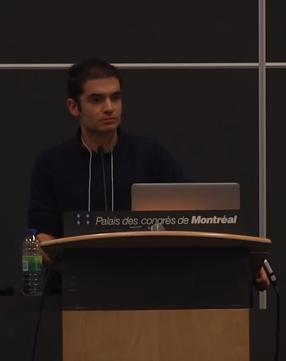
- 如果数据集够大
- 并且训练一个很大的神经网络
- 你肯定能成功!
大型语言模型
{kind=link}
大型语言模型及训练计算量

- Google: LaMDA(137B),PaLM(540B, Minerva,PaLM-E),BERT(0.34B)
- Meta: Galactica,OPT(175B),LLaMA（65B）
- MS&NV: Megatron(530B)
- DM: Chinchilla (70B)
- HF🤗:Bloom(175B)
- EleutherAI: GPT-NEO(2.7B),-J(6B),-NeoX(20B)
- DALL-E, Imagen, Flamingo, Parti, SD
锂电池能量密度提升
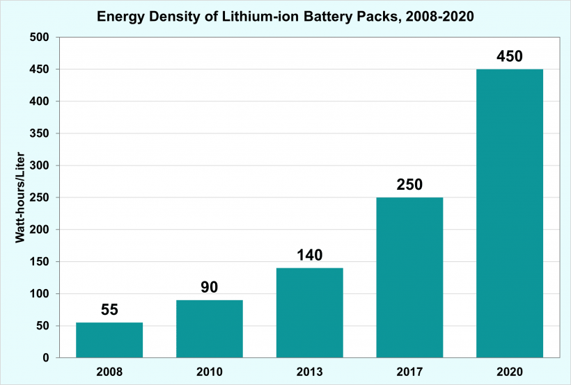
大型语言模型的能力改善
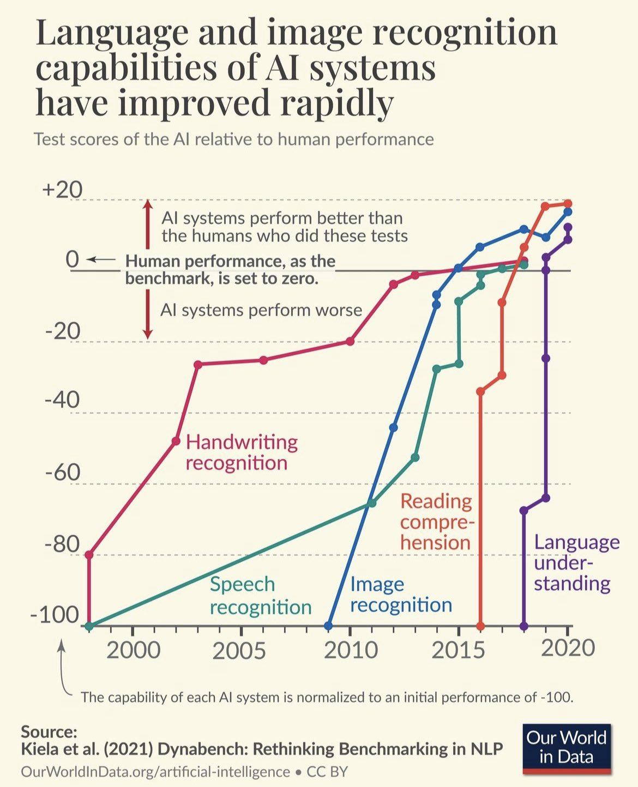
社会影响
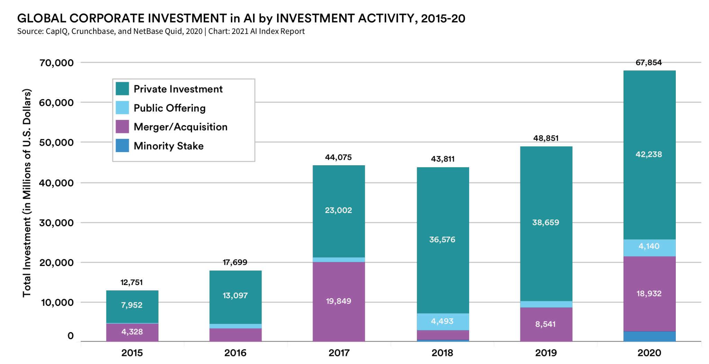
- 微软入股 OpenAI 100 亿美元，持股增至 49%，
- 人工智能军备竞赛：微软(Sydney)，谷歌(LLaMDA, Bard)，Meta(Galactica, LlaMa), GPT4 发布
- 智能(Intelligence)，能动性(Agency)，知觉（Sentience)，意识(Conciousness)，意志（Free Will)…
ChatGPT的虚假承诺
所谓人工智能革命性的进展令人既担忧又乐观。 乐观是因为智能可以用于解决问题，担忧是因为当今最流行的人工智能方法，也就是机器学习，它的语言和知识的概念从根本上是有缺陷的。
Yoshua Bengio
ChatGPT 令人印象深刻，但在科学上只是微小的一步，最多称得上是工程上的进展。它的主要意义在于唤醒公众对人工智能意义的认识。
大型语言模型的工程实现
用例
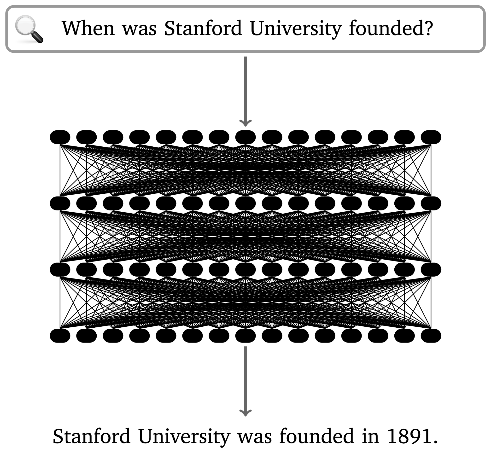
语言编码模型：语素和 n-元语法(n-gram)
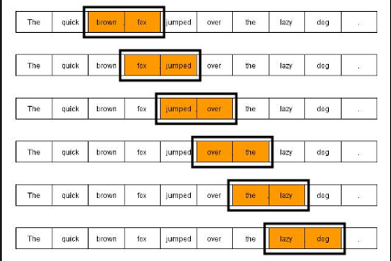
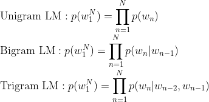
GPT 中的计算对象：内嵌(embedding)

- 内嵌（单词/语素的编码）
- 独立语义，在句子/文本的不同位置重复出现，可以复用的变量
- 对应于感质（Quolia）：概念（颜色）在意识中的聚类，语言只是一种接口
- 内嵌的相互关系通过计算确认
- 内嵌通过训练样本学习，收集由句法确定的语义
- 预训练内嵌空间（tensorflow）
内嵌的运算（embedding）


图像中的内嵌
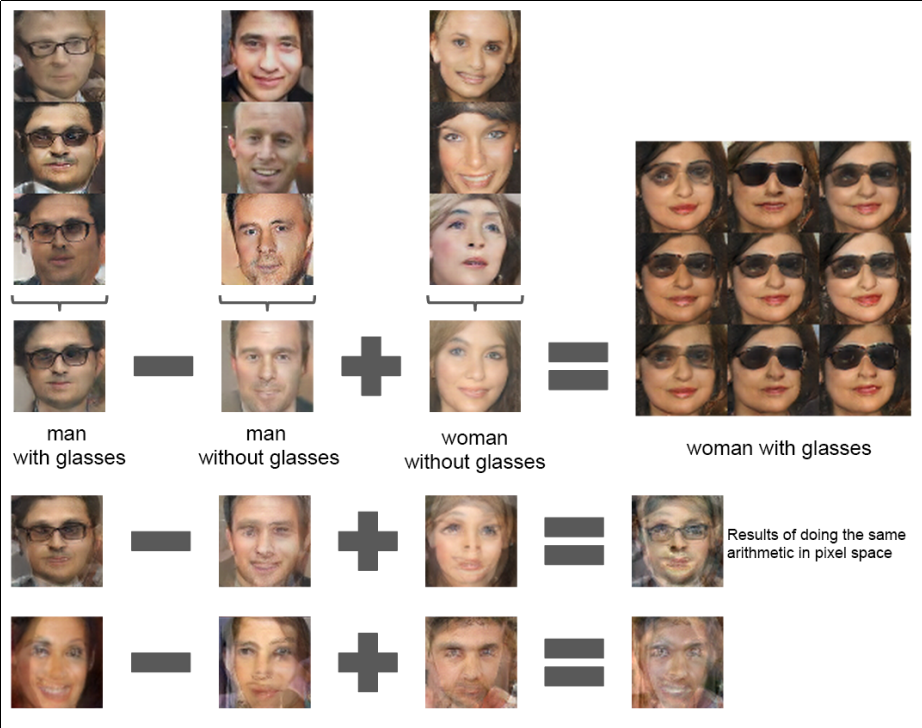
- 图像内嵌编码和解码，通过 DCGAN 训练得到
- 内嵌参数的插值：图像的连续变化（男–>女）
- 内嵌的向量运算：图像的修改
GPT3 训练


GPT3 推理


GPT3 与 Transformer


ChatGPT

- GPT3.5: codex
- 监督学习，细调
- 强化学习(PPO)构造奖励函数
- 应用强化学习训练改进模型
涌现行为（Emergence Behavior)
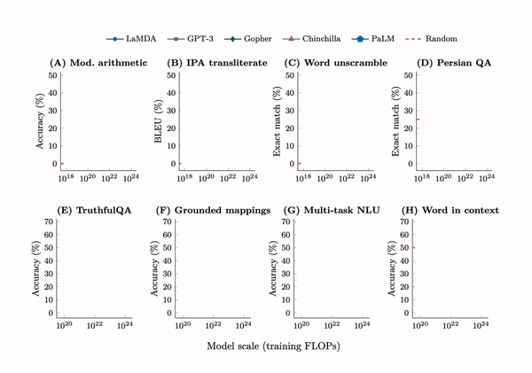
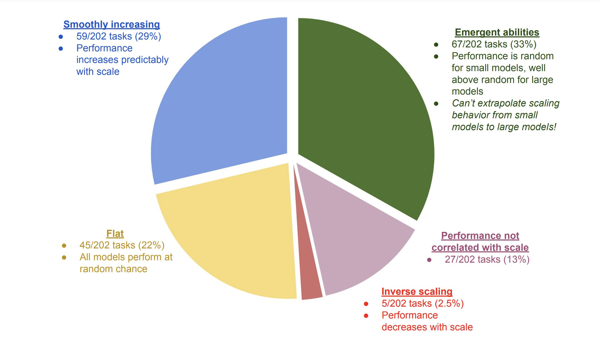
应用和部署
- 提示工程(Prompt Engineering)
- LLaMA 复刻 GPT (斯坦福Alpaca 7B, 100$）
- 通过 API 比对训练➡商业模式？
- LLaMA (7B) 树莓派移植（4GB, 10sec/token）
变形金刚（Transformer）

- 结构: 归纳偏差少，通用性好
- 注意力（内注意力（self attention)，交叉注意力， 多头内注意力
- MLP,多层感知机
- 残差结构
- 需要大量的训练样本
- 网络尺度和数据集
争议
ChatGPT 是现实的模糊版本

ChatGPT 是现实的模糊复印
- 类似 jpeg 图片对原始图片的有损压缩
- 现实的描述不精确，造成语料和信息的失真和模糊
- 模型幻觉问题（hallucination），造成语料和信息的污染
- 有损压缩显得更智能
GPT4 和语言的未知领域
“它们(LLM)还可能带来新的伦理、社会和文化挑战，需要认真反思和监管。 我们如何使用这项技术将取决于我们如何认识到它对我们自己和他人的影响。
该技术是“人工智能”的一种形式。 “智能”一词源自 inter-（“之间”）和 legere（“选择、挑选、阅读”）。 那么，智能就是能够在事物之间做出选择，挑选出重要的东西，阅读所写的东西。 智力不仅仅是数量或质量； 它是一种活动、一种过程、一种实践。 这是我们用思想和语言做的事情。
但是当我们让 GPT4 为我们做这件事时，我们不是在放弃我们的智能吗？ 难道我们没有放弃选择、挑选、阅读的能力吗？ 我们不是变成了语言的被动消费者而不是主动的生产者吗？”
智能与一致性问题
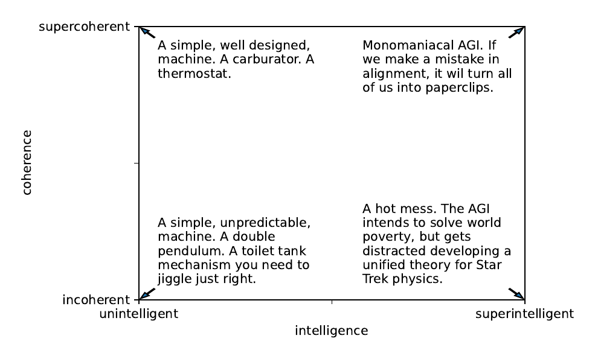
越高级的智能越混乱
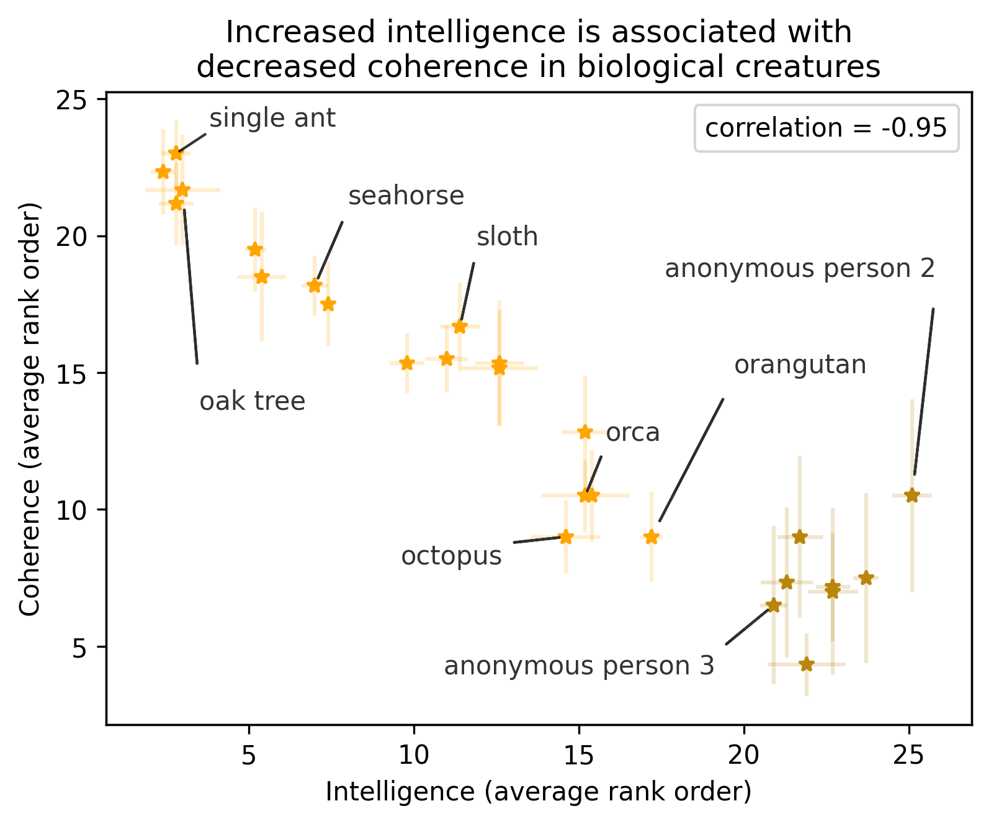
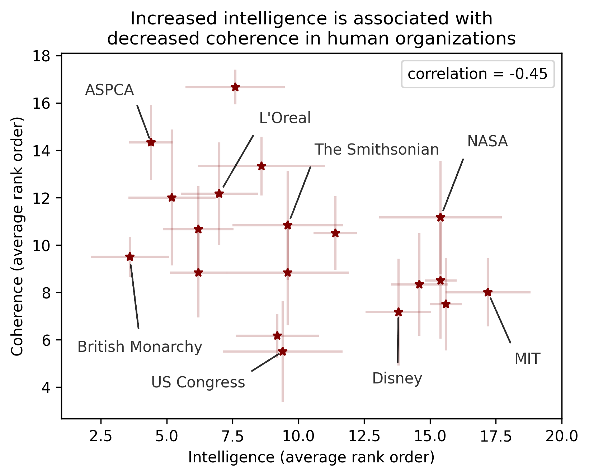
神经网络的条理性
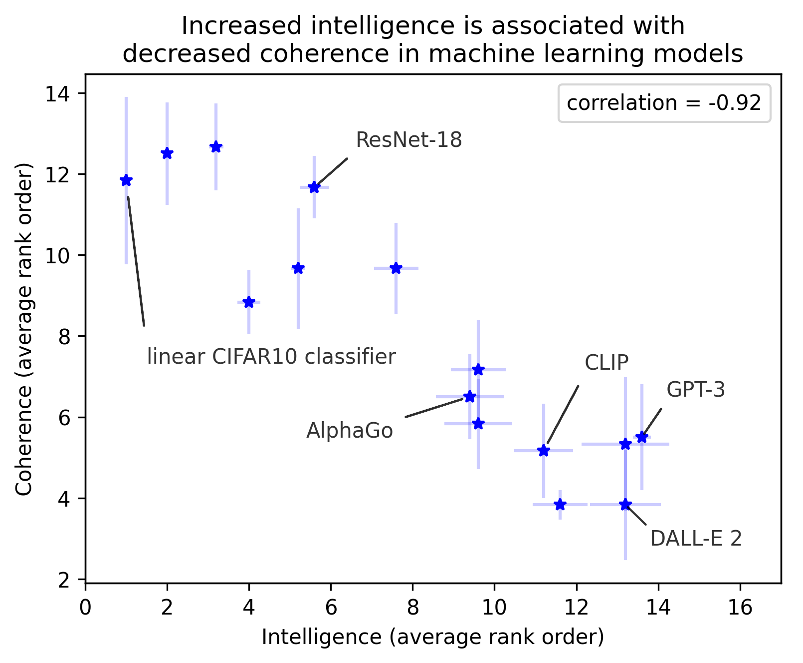
展望和挑战
- 效率，开放，出处，有效性，合成
- 基于检索（搜索）的自然语言处理
- 大型语言模型的“最后一公里”
- 网络结构理解
- 维护，高效更新
- 缺点
- 长段落
- 长逻辑推理（chain-of-thought reasoning） 👉 强化学习？
- 自然语料样本空间的污染